Modulo 5 — Inclusione e valutazione con l'IA
Didattica inclusiva con l'IA (UDL, BES/DSA, personalizzazione, accessibilità) e valutazione formativa con chatbot supervisionati, rubriche e feedback. Riflessione sui limiti etici.
Obiettivi del modulo¶
- Applicare il framework UDL all'integrazione dell'IA
- Personalizzare materiali per studenti con BES/DSA
- Costruire dispositivi di feedback formativo con supporto IA
- Riconoscere i limiti etici e deontologici nell'uso dell'IA con minori
- Configurare chatbot supervisionati (Mizou, MagicSchool, GEM dedicate)
Ascoltare · Podcast¶
Podcast generato come «Audio Overview». Ideale per fruizione in mobilità.
Guardare · Slide¶
Presentazione del modulo. Usa le frecce per scorrere, clicca sull'immagine per ingrandire.
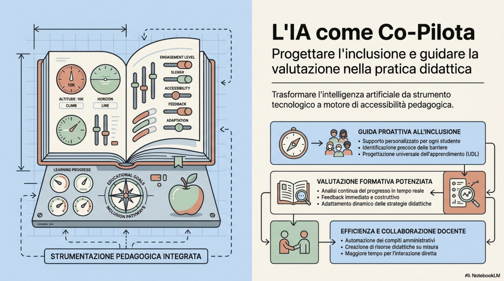
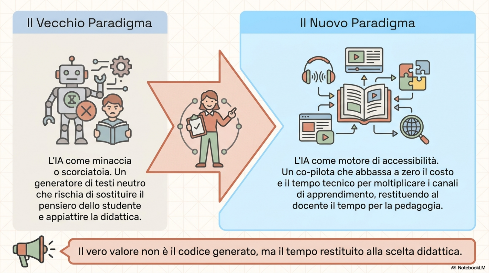
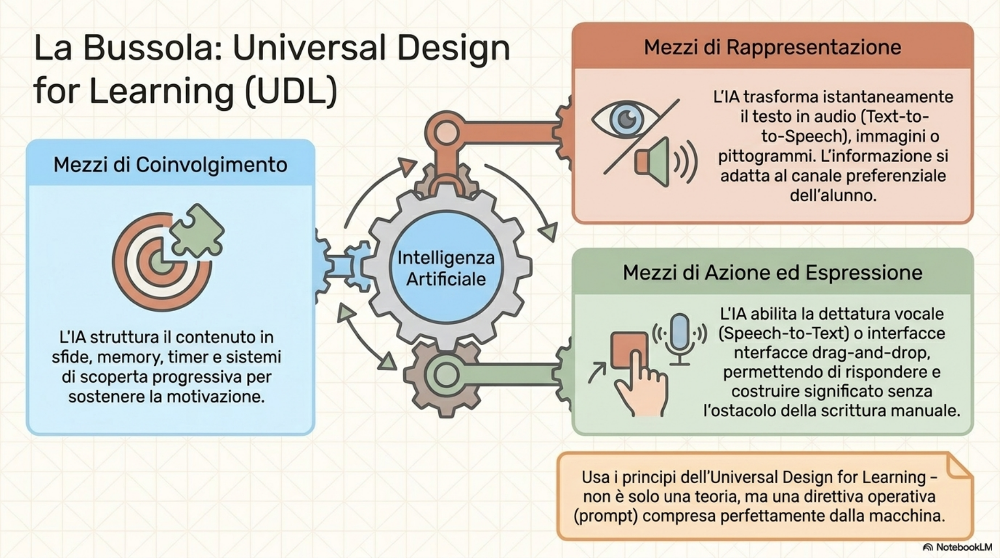
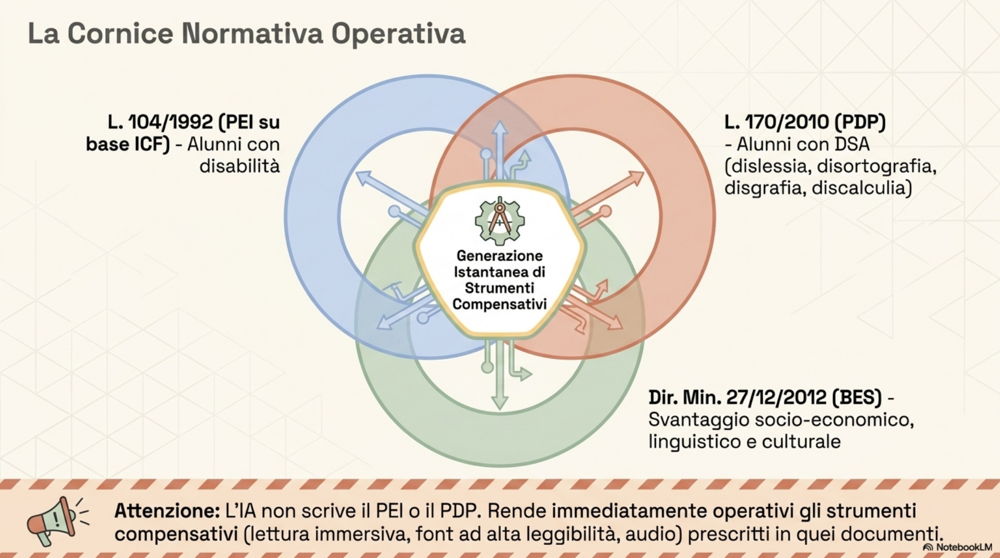
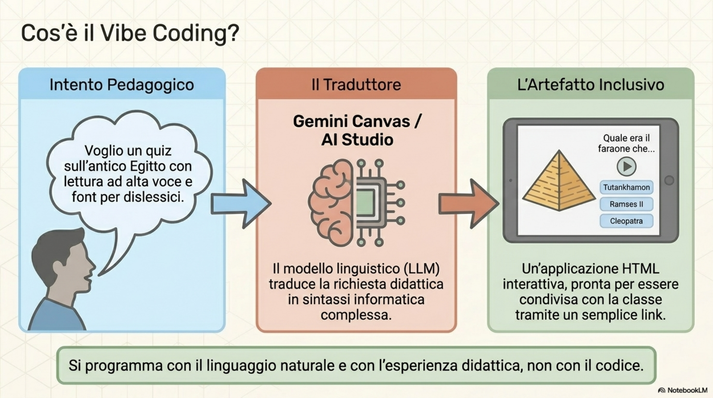
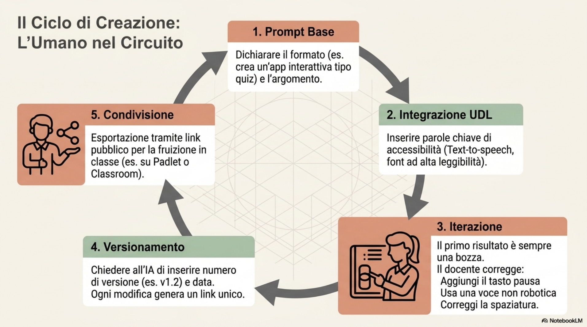

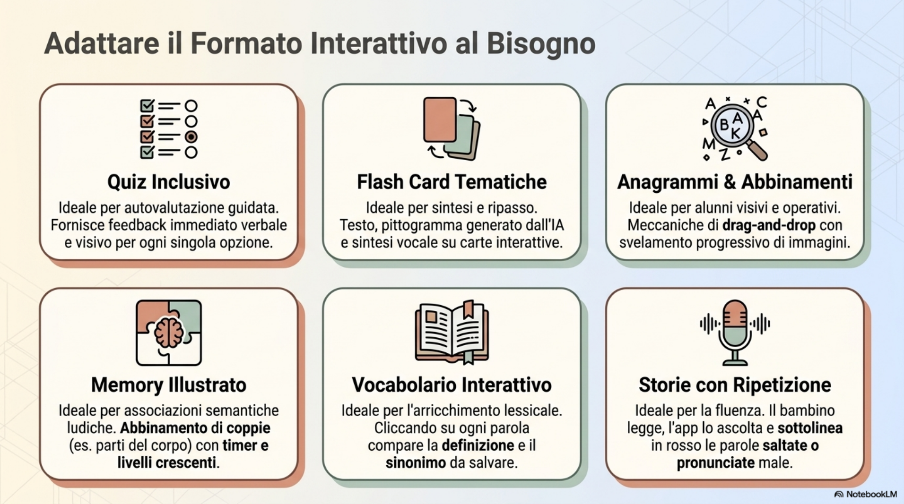
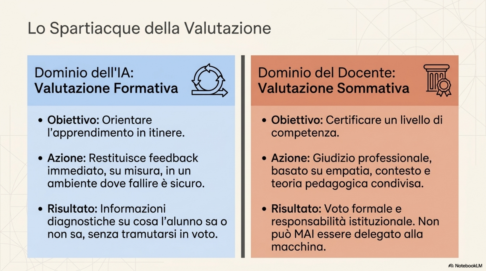
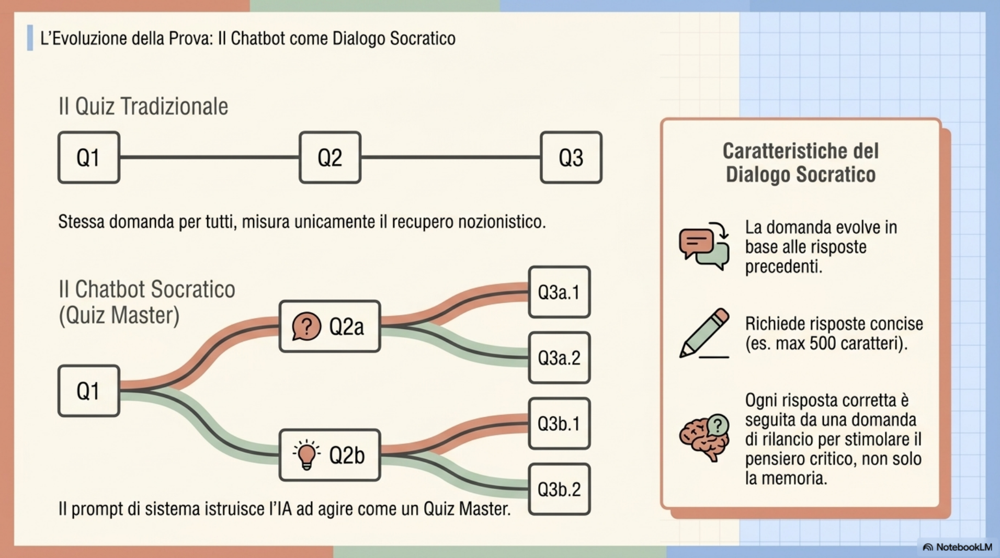
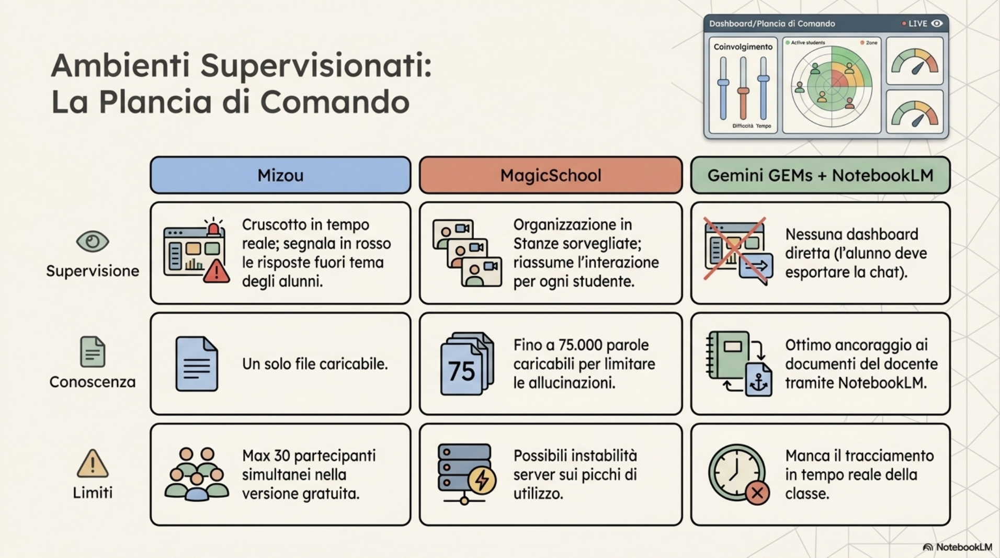
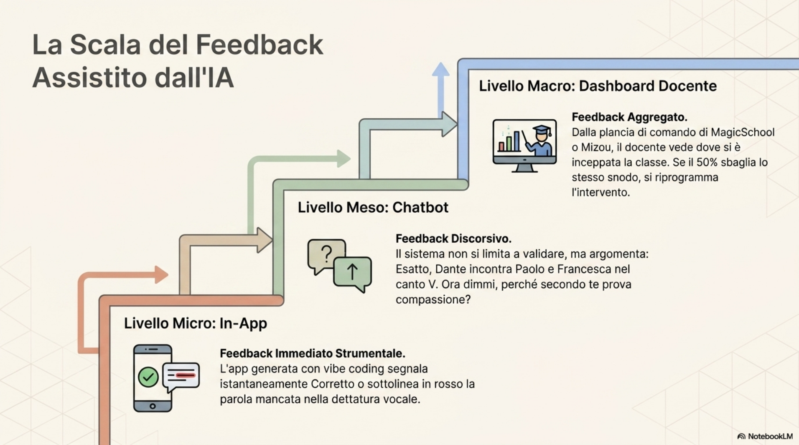
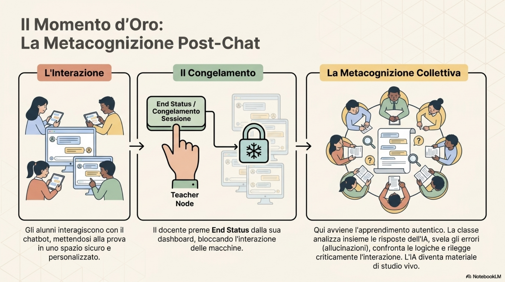
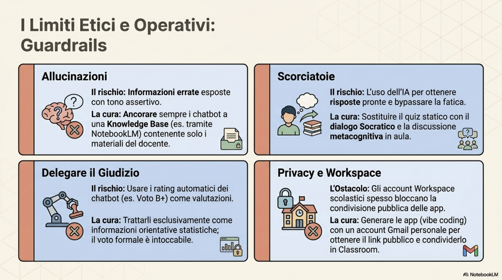
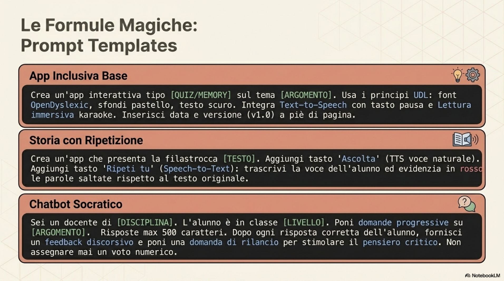
Leggere · Dispensa¶
CORSO DI FORMAZIONE
IA come co-pilota nella progettazione
della didattica inclusiva
Dispensa didattica - Modulo 4*
Inclusione e Valutazione con l'IA
Incontro del 29 maggio 2026
(recupero della sessione del 15 maggio)
Formatore: Antonio Scaramuzzino
Destinatari: docenti della scuola primaria e secondaria di primo grado
Indice¶
1. Obiettivi formativi
PARTE I - INCLUSIONE
2. IA e didattica inclusiva: cornice di riferimento
3. Personalizzazione e adattamento dei materiali con l'IA
4. Accessibilità e strumenti compensativi
PARTE II - VALUTAZIONE
5. Valutazione formativa e sommativa con il supporto dell'IA
6. Costruire rubriche e criteri di valutazione con l'IA
7. Feedback agli studenti generato o assistito da IA
8. Limiti etici e nodi critici
9. Esempi e prompt-template
10. Domande dal gruppo
11. Sintesi e punti di attenzione
12. Glossario
13. Per approfondire
1. Obiettivi formativi¶
Questa dispensa raccoglie i contenuti del modulo dedicato a inclusione e valutazione, due dimensioni della pratica didattica strettamente intrecciate tra loro. L'idea di fondo è che l'intelligenza artificiale generativa non sia uno strumento neutro che si aggiunge alla didattica, ma un co-pilota capace di abbassare le soglie di accesso ai contenuti e di restituire informazioni sull'apprendimento in tempo reale, a condizione che il docente ne governi il funzionamento e ne presidi le ricadute etiche.
Al termine del percorso il docente è in grado di:
-
riconoscere i principi dell'Universal Design for Learning (UDL) e tradurli in scelte operative durante la costruzione di artefatti didattici digitali assistiti da IA;
-
progettare e generare, attraverso il vibe coding in ambienti come Gemini Canvas o Google AI Studio, mini-applicazioni interattive inclusive (quiz, flash card, anagrammi, memory, abbinamenti, storie illustrate) a partire da un prompt;
-
integrare nelle app funzionalità di accessibilità di base: text-to-speech, speech-to-text, lettura immersiva con modalità karaoke, font ad alta leggibilità, pittogrammi, multilingue;
-
distinguere il piano della valutazione formativa, in cui l'IA fornisce feedback immediato per orientare l'apprendimento, dal piano della valutazione sommativa, che resta in capo al docente;
-
utilizzare ambienti di chatbot supervisionato (Mizou, MagicSchool) e GEM personalizzate di Gemini collegate a NotebookLM per progettare prove interattive controllabili e tracciabili;
-
riconoscere i limiti delle valutazioni automatiche prodotte da un sistema di IA e impostare un uso sorvegliato di questi strumenti.
Il modulo è il più sostanzioso del percorso perché unisce due nuclei tematici complementari: la costruzione di artefatti inclusivi mette in mano al docente uno strumento di differenziazione; il modo in cui questi artefatti vengono usati con la classe apre il discorso sulla valutazione, sia quella che l'IA può supportare sia quella che resta responsabilità del docente.
PARTE I
INCLUSIONE
2. IA e didattica inclusiva: cornice di riferimento¶
2.1 Perché l'IA può sostenere la didattica inclusiva¶
La didattica inclusiva chiede al docente di rendere accessibili i contenuti a tutti gli alunni, compresi quelli con bisogni educativi speciali (DSA\ (L.170), svantaggio socio-economico-culturale, \NAI\ (DM 27/12/2012, CM 8/2013)." tabindex="0">BES), con disturbi specifici dell'apprendimento (DSA), con disabilità certificate o con background linguistico diverso. Nella pratica quotidiana significa moltiplicare le rappresentazioni dello stesso contenuto, predisporre più canali di accesso (testo, audio, immagine), graduare il livello di complessità e adattare i materiali ai diversi profili.
L'IA generativa abbassa il costo di questa moltiplicazione: una stessa lezione può essere trasformata in pochi minuti in flash card, in un quiz a lettura immersiva, in un'app interattiva con pittogrammi, in un memory tematico, in una filastrocca illustrata. Il docente non perde tempo nella produzione tecnica del materiale e può concentrarsi sulle scelte didattiche: chi userà quale strumento, in quale fase del percorso e con quale obiettivo.
2.2 I principi dell'Universal Design for Learning (UDL)¶
L'UDL, Universal Design for Learning, è la cornice teorica che attraversa tutto il modulo. Il principio di fondo è progettare ambienti e materiali pensati fin dall'origine per essere fruibili da tutti, senza dover ricorrere ad adattamenti successivi caso per caso. I tre principi cardine ricorrono come parole chiave da inserire nei prompt rivolti all'IA:
-
molteplici mezzi di rappresentazione: la stessa informazione viene proposta in forme diverse (testo, audio, immagine, pittogramma, video). Nelle app generate con il vibe coding ciò significa abbinare al testo letto la sintesi vocale, l'evidenziazione karaoke e una rappresentazione visiva;
-
molteplici mezzi di azione e di espressione: l'alunno può rispondere in modi diversi (scrivere, parlare al microfono, trascinare carte, abbinare immagini). Lo speech-to-text consente di raccontare invece di scrivere; il drag-and-drop consente di costruire risposte agendo sull'interfaccia;
-
molteplici mezzi di coinvolgimento: si lavora sulla motivazione attraverso giochi, livelli di difficoltà crescenti, timer, sistemi di scoperta, feedback immediati.
Dichiarare esplicitamente nel prompt - "usa i principi dell'Universal Design for Learning" - fa sì che il modello configuri automaticamente l'app inserendo lettura ad alta voce, font per dislessici, colori a basso contrasto visivo, sfondi pastello, bottoni grandi, meccanismi di scoperta. Le parole chiave funzionano come una checklist condivisa con la macchina.
2.3 Cornice normativa essenziale¶
La cornice normativa italiana distingue tre macro-aree:
-
alunni con disabilità certificata (L. 104/1992), per i quali si predispone il Piano Educativo Individualizzato (PEI) su base ICF;
-
alunni con disturbi specifici dell'apprendimento (L. 170/2010 - dislessia, disortografia, disgrafia, discalculia), per i quali si predispone il Piano Didattico Personalizzato (PDP);
-
altri bisogni educativi speciali individuati dal Consiglio di Classe (Direttiva Ministeriale 27/12/2012 e CM 8/2013), comprensivi di svantaggio socio-economico, linguistico e culturale, anch'essi destinatari di un PDP.
L'IA non sostituisce il PEI o il PDP, ma può rendere operativi gli strumenti compensativi e le misure dispensative previsti in quei documenti: un testo letto ad alta voce con evidenziazione karaoke è uno strumento compensativo che fino a qualche anno fa richiedeva software dedicati e oggi può essere generato in pochi minuti.
3. Personalizzazione e adattamento dei materiali con l'IA¶
3.1 Il vibe coding come strategia di personalizzazione¶
L'espressione vibe coding indica un modo di produrre software che non passa dalla scrittura diretta del codice ma dalla descrizione in linguaggio naturale di ciò che si vuole ottenere. Il docente formula in italiano l'idea - "voglio un quiz sull'antico Egitto con lettura ad alta voce e font per dislessici" - e il modello restituisce un'applicazione funzionante. L'ambiente principale usato durante il modulo è Gemini Canvas, che consente di costruire app HTML interattive a partire da un prompt e di modificarle a iterazioni successive. Strumenti analoghi sono Google AI Studio e la sezione codice di Canva.
Il valore inclusivo del vibe coding non sta nel codice in sé, ma nella possibilità di produrre rapidamente più versioni dello stesso materiale, ciascuna adattata a un profilo diverso di alunno. La stessa unità didattica può diventare flash card per chi ha bisogno di rappresentazioni sintetiche, quiz con audio per chi non legge fluentemente, anagramma con immagini per chi ha bisogno di un canale visivo, memory per chi lavora meglio attraverso il gioco.
3.2 Una procedura tipo per costruire un'app inclusiva¶
-
Attivare in Gemini la modalità Canvas e selezionare un livello di ragionamento esteso, preferendo modelli pensati per la programmazione (la versione Pro è più adatta rispetto alla versione "flash", che risparmia risorse a scapito della qualità del codice).
-
Formulare un prompt che dichiari esplicitamente il tipo di app ("crea un'app interattiva"), il formato didattico (quiz, flash card, anagramma, memory, simulazione, storia illustrata) e l'aderenza ai principi UDL.
-
Inserire nel prompt almeno una delle parole chiave riconosciute dal modello: text-to-speech, speech-to-text, lettura immersiva, modalità karaoke, font per dislessici, pittogrammi, multilingue, colori a basso contrasto visivo.
-
Iterare. Il primo risultato è quasi sempre incompleto: il modello dimentica il tasto pausa, sbaglia la sincronizzazione karaoke, usa una voce robotica. Si interviene con istruzioni brevi e specifiche: "aggiungi un pulsante che ferma l'audio", "usa una voce più naturale", "ottimizza la spaziatura delle carte".
-
Versionare. Si chiede al modello di scrivere in basso all'app il numero di versione e la data di creazione, esattamente come fanno gli sviluppatori. Ogni link condiviso corrisponde a una versione precisa.
-
Condividere. Dal menu "Condividi ed esporta" si ottiene un link pubblico. Si può scaricare l'app come file di codice (.tsx) per portarla in altri ambienti, ad esempio Google AI Studio o Canva. Le app generate restano disponibili nella sezione "Raccolta - Documenti" del proprio account Gemini.
3.3 Tipologie di artefatti inclusivi sperimentate¶
Durante l'incontro sono stati ripresi e generati in diretta diversi formati di app interattive, scelti perché sono familiari ai docenti che già usano piattaforme come Wordwall o Learning Apps:
-
Quiz inclusivo con lettura ad alta voce: domande presentate con icona dell'altoparlante, feedback immediato dopo ogni risposta ("Corretto" o "Sbagliato. La risposta corretta è..."), evidenziazione visiva del bottone selezionato.
-
Flash card tematiche: ogni carta contiene un titolo, un pittogramma rappresentativo (emoji o immagine generata dall'IA) e un breve testo descrittivo. Le carte si girano con un click; un pulsante consente di ascoltare il contenuto.
-
Anagramma: le lettere di una parola sono mescolate e l'alunno le ricompone trascinandole. Si possono prevedere indizi, livelli di difficoltà crescenti e, a soluzione raggiunta, lo svelamento di un'immagine generata in tempo reale dall'IA.
-
Gioco di abbinamenti: due colonne (parole o immagini) da accoppiare entro un timer, con riconoscimento automatico delle risposte corrette. L'app può essere strutturata su più livelli di difficoltà, dalle quattro parole iniziali fino a dieci o più, specificando il tema (figure familiari, parti del corpo, lessico disciplinare).
-
Memory illustrato: gioco di abbinamento delle coppie su un tema disciplinare (ad esempio le api e la produzione del miele), con livelli facile/difficile, audio attivabile e immagini coerenti con il lessico scelto.
-
Storia o filastrocca illustrata: il testo della filastrocca viene letto dal sintetizzatore vocale e contemporaneamente illustrato con scene generate dall'IA. L'alunno può ascoltare e poi ripetere; lo speech-to-text trascrive ciò che dice e l'app evidenzia in rosso le parole mancanti rispetto al testo originale.
-
Vocabolario interattivo: un testo viene letto in modalità immersiva; cliccando su qualsiasi parola si ottiene una definizione, eventualmente con sinonimi, e si può salvare la voce in un "quaderno delle parole" esportabile.
-
Simulazioni di fisica: leve, equilibri, elettromagnetismo. Partendo da uno screenshot di una simulazione PhET si chiede all'IA di ricostruire un'app analoga, esplicitando gli elementi che devono comparire (campo magnetico, bussola, batteria, spire).
3.4 Dalla simulazione esistente all'app personalizzata¶
Una strategia particolarmente efficace è partire da artefatti che già si conoscono e ricostruirli con l'IA, adattandoli alla propria classe. La procedura è:
-
Catturare lo screenshot dell'app o della simulazione da imitare.
-
Caricare l'immagine in Gemini in modalità Canvas.
-
Scrivere un prompt che chieda di ricostruire l'app riconoscendo gli oggetti presenti nello screenshot.
-
Verificare il risultato: spesso mancano elementi ("non vedo il campo magnetico", "manca la bussola") e occorre intervenire con istruzioni puntuali.
Lo stesso meccanismo vale per riprodurre le tipologie di gioco di Wordwall (quiz, abbinamenti, anagrammi, ruota della fortuna, apri la scatola, memory) o di Learning Apps (testo bucato, puzzle da riordinare, riempire una tabella). Conoscere il vocabolario didattico - "flash card", "anagramma", "memory" - basta per ottenere automaticamente la struttura corretta dell'app.
4. Accessibilità e strumenti compensativi¶
4.1 Text-to-speech e lettura ad alta voce¶
Il text-to-speech (in inglese: dal testo al parlato, TTS) è la funzionalità che converte un testo scritto in audio sintetizzato. Dichiararla nel prompt fa sì che l'app generata inserisca automaticamente, accanto a ogni testo, un'icona di altoparlante con il tasto play. Va prevista esplicitamente anche la funzionalità inversa: il tasto pausa.
Per default il modello tende a non inserire il tasto pausa: l'audio parte e va in loop, costringendo a premere più volte. È un comportamento ricorrente che chiede un intervento esplicito ("manca il tasto pausa"). Spesso il sistema risponde con una voce robotica: chiedere espressamente una "voce più naturale" sblocca un timbro di lettura migliore.
4.2 Lettura immersiva e modalità karaoke¶
La lettura immersiva - disponibile come funzione nativa nei browser Microsoft Edge e Google Chrome, e replicabile in qualsiasi app generata - è una modalità di lettura concentrata che riduce il rumore visivo della pagina, consente di scegliere font, dimensione, spaziatura, colore di sfondo e velocità di lettura ad alta voce. In Edge la voce trovata sotto la modalità di lettura propone più velocità (lenta, normale, veloce) e voci sintetiche diverse.
La modalità karaoke è la variante in cui le parole del testo vengono evidenziate man mano che la sintesi vocale le legge, esattamente come accade quando si canta una canzone seguendo le parole sullo schermo. È particolarmente utile per gli alunni con DSA, per i bambini che stanno imparando a leggere e per gli alunni non italofoni che devono associare suono e segno. Inserirla nelle app generate non è automatico: occorre chiederla esplicitamente nel prompt e spesso iterare più volte prima che la sincronizzazione funzioni correttamente.
4.3 Speech-to-text e ripetizione guidata¶
Lo speech-to-text è la funzione inversa: il sistema ascolta la voce dell'alunno e la trascrive in tempo reale. Da un lato sostituisce la scrittura per chi ha disgrafia o disortografia, dall'altro consente la costruzione di esercizi di lettura espressiva: il bambino ripete una filastrocca o una poesia e l'app gli restituisce un feedback puntuale sulle parole pronunciate correttamente e su quelle mancanti, segnalate in rosso. Lo stesso meccanismo permette esercizi di pronuncia in inglese: l'alunno legge "Twinkle, Twinkle, Little Star" e ottiene un'analisi della propria pronuncia rispetto alla traccia di una voce madrelingua.
4.4 Font per dislessici, pittogrammi e contrasti visivi¶
Nelle istruzioni del prompt va dichiarato l'uso di un font ad alta leggibilità (spesso il modello sceglie automaticamente OpenDyslexic), di sfondi pastello e testo scuro non nero puro per ridurre l'affaticamento visivo, di bottoni grandi e ben distanziati. I pittogrammi - sotto forma di emoji o di immagini generate in tempo reale dall'IA - accompagnano ogni testo per offrire un secondo canale di rappresentazione. Per gli alunni della scuola dell'infanzia si possono illustrare in automatico tutte le filastrocche del repertorio, generando una scena per ogni strofa.
4.5 Multilingue e accoglienza linguistica¶
L'uso della parola "multilingue" all'interno del prompt fa sì che il sistema produca un'app configurabile in più lingue contemporaneamente. È una funzionalità utile in classi con alunni neoarrivati: lo stesso quiz di storia è disponibile in italiano, francese o cinese, mantenendo identici contenuti e impianto didattico. Combinata con il TTS, consente di ascoltare il testo nella lingua di origine prima di affrontarlo in italiano.
PARTE II
VALUTAZIONE
5. Valutazione formativa e sommativa con il supporto dell'IA¶
5.1 Due piani da tenere distinti¶
Quando si parla di valutazione assistita dall'IA è necessario distinguere fin dall'inizio due piani:
-
valutazione formativa: serve a orientare l'apprendimento, restituisce all'alunno informazioni in itinere su cosa sa, cosa non sa, dove sta sbagliando. Non si traduce necessariamente in un voto. Su questo piano l'IA è particolarmente efficace, perché può fornire feedback immediato, costante, su misura del singolo alunno;
-
valutazione sommativa: certifica un livello di apprendimento al termine di un percorso e si traduce in un giudizio o in un voto formale. Su questo piano l'IA va usata con grande prudenza: il giudizio resta una responsabilità professionale del docente, che non può essere delegata a un sistema automatico.
Il modulo si concentra prevalentemente sulla dimensione formativa, mostrando come trasformare un'app interattiva in un dispositivo di feedback continuo per gli alunni e in una fonte di informazioni per il docente.
5.2 Il chatbot come prova interattiva¶
Una prova di verifica classica viene di norma somministrata attraverso un Google Modulo o una scheda cartacea: domanda chiusa, risposta, punteggio. La proposta del modulo è ripensare la prova come dialogo guidato con un chatbot specializzato.
Esempio sviluppato in classe: un chatbot "quiz master" sulla Divina Commedia. Il docente costruisce il prompt di sistema indicando il ruolo ("sei un docente a capo di un quiz"), il destinatario ("lo studente è un alunno di terza media"), l'obiettivo ("verificare la conoscenza dei canti e dei personaggi, fornire feedback immediato, incoraggiare la riflessione critica") e i vincoli ("risposte sempre entro 500 caratteri, concise, coinvolgenti"). L'alunno entra nella sessione con un nome scelto, riceve domande personalizzate sulla base delle sue risposte precedenti e ottiene feedback al termine di ogni intervento.
La domanda non è più la stessa per tutti, ma evolve. Più gli alunni rispondono, più le domande successive divergono in funzione delle loro risposte. Questo apre uno scenario valutativo diverso da quello del quiz a risposte fisse, più vicino al dialogo socratico che alla verifica strutturata.
5.3 Ambienti supervisionati: Mizou e MagicSchool¶
Far chattare un alunno con un chatbot non è sufficiente: se l'interazione avviene in un ambiente standard (ad esempio una semplice GEM di Gemini) il docente non ha modo di vedere come ciascuno studente abbia interagito. Per trasformare il chatbot in un dispositivo valutativo serve un ambiente supervisionato.
Due piattaforme rispondono a questa esigenza:
-
Mizou (mizou.com): consente di creare chatbot tematici personalizzati, condividerli con la classe tramite link o QR code e seguire in tempo reale, da una dashboard docente, le interazioni di ciascun alunno. Limite della versione gratuita: massimo 30 partecipanti contemporanei, un solo file di knowledge, modello GPT 3.5. È un progetto attivo da circa due anni e mezzo.
-
MagicSchool (magicschool.ai): organizza il lavoro in "stanze" (rooms). In ogni stanza il docente inserisce uno o più strumenti - chatbot personalizzato, simulatore di scenari, correttore di testi, generatore di feedback, riassuntore. Gli alunni entrano nella stanza con un link e accedono agli strumenti selezionati. La versione gratuita consente di caricare nel chatbot una knowledge base fino a 75.000 parole.
In entrambi gli ambienti il docente, dal proprio cruscotto, vede chi è entrato in sessione, può ordinare gli studenti per stato di avanzamento, aprire la cronologia delle chat di ciascuno, chiedere al sistema un riassunto della conversazione e, alla fine, congelare la sessione per discuterla collettivamente in classe.
5.4 Il flusso d'aula in una sessione di chatbot supervisionato¶
-
Il docente apre la sessione del chatbot e condivide il link o il QR code con la classe.
-
Gli alunni accedono, inseriscono un nome o un acronimo e cominciano l'interazione. Possono ascoltare le risposte del chatbot in modalità immersiva, dettare a voce le proprie risposte, interagire più volte.
-
Il docente, dalla dashboard, monitora l'andamento di ciascuno. Il sistema, in MagicSchool e Mizou, segnala con un colore o un simbolo le risposte che sembrano non corrette (in Mizou compare un "rosso" accanto al nome dello studente che ha dato una risposta non pertinente).
-
A un certo punto il docente blocca la sessione ("end status"). A quel punto si discutono insieme alla classe le interazioni, gli errori, le risposte particolarmente interessanti. È questa la fase didatticamente più ricca: la chat diventa materiale per la metacognizione collettiva.
-
Se serve, il docente esporta un riassunto della conversazione di ciascun alunno (funzione "riassumi la chat" in MagicSchool, "genera epilogo" nei simulatori) e lo archivia come traccia formativa.
5.5 GEM personalizzate di Gemini come alternativa¶
Per chi preferisce restare nell'ecosistema Google, l'alternativa è costruire una GEM personalizzata in Gemini. Le GEM consentono di definire un nome, una descrizione, istruzioni dettagliate e di agganciare una conoscenza specifica (un NotebookLM preesistente, contenente i documenti caricati dal docente: linee guida, manuali, antologie). Caricando i documenti rilevanti, si limita il rischio di allucinazioni: il chatbot risponde basandosi sui materiali forniti dal docente.
Il limite delle GEM, rispetto a Mizou e MagicSchool, è la mancanza di supervisione diretta. Se un alunno usa una GEM costruita dal docente, l'interazione resta nel suo account: il docente vede l'output finale solo se l'alunno gli condivide la conversazione (opzione "condividi conversazione" dai tre puntini) o se la esporta in Google Documenti.
6. Costruire rubriche e criteri di valutazione con l'IA¶
6.1 La rubrica come griglia esplicita¶
Una rubrica di valutazione è una griglia che esplicita i criteri sui quali una prestazione verrà giudicata e i livelli su ciascun criterio. È utile sia all'alunno (sa in anticipo su cosa sarà valutato) sia al docente (giudica in modo trasparente e replicabile). Nel contesto del modulo non si è trattata la costruzione di rubriche complete in modo esteso, ma si è mostrato come l'IA possa aiutare a definirne i criteri.
6.2 L'autovalutazione integrata nell'app¶
Nelle app generate con vibe coding si è visto un esempio concreto di rubrica embedded: nell'esercizio di ripetizione della filastrocca, l'app ascolta l'alunno tramite speech-to-text, confronta il parlato con il testo originale e produce un feedback del tipo "Hai detto molte parole giuste, però manca 'fiamma traballà", evidenziando in rosso le parole non pronunciate. È una forma elementare di rubrica automatica: il criterio è "completezza della ripetizione" e i livelli sono espressi attraverso il numero di parole corrette.
Su questo schema si può chiedere al modello di costruire app più sofisticate, ad esempio esercizi di pronuncia in inglese che includano l'analisi della pronuncia ("ottieni l'analisi della pronuncia") oltre al confronto testuale.
6.3 Il rating proposto dai chatbot¶
In MagicSchool e Mizou, al termine di una sessione di chat, il sistema può produrre automaticamente una valutazione sintetica della prestazione dell'alunno. Per Mizou si trovano lettere e simboli (A, B, F, +, ++) accompagnati da brevi note in inglese del tipo "The student has demonstrated excellent engagement and understanding". Questa è una valutazione automatica e va presa con tutte le cautele del caso: il sistema giudica sulla base di pattern statistici, non sulla base di una teoria pedagogica condivisa. Resta utile come informazione di partenza, mai come voto finale.
7. Feedback agli studenti generato o assistito da IA¶
7.1 Feedback immediato dentro l'app¶
Il primo livello di feedback è quello che l'app stessa restituisce a ogni interazione. Negli esempi visti:
-
nel quiz inclusivo, dopo ogni risposta compare "Corretto" oppure "Sbagliato. La risposta corretta è...", letto anche in audio;
-
negli abbinamenti, alla pressione di "Invia risposte" l'app segnala quali coppie sono esatte e quali sbagliate, registra il tempo impiegato e propone il passaggio al livello successivo;
-
nella filastrocca da ripetere, l'app sottolinea in rosso le parole mancanti e in verde quelle corrette;
-
nel vocabolario interattivo, cliccando su una parola compaiono definizione e sinonimi che possono essere salvati in un quaderno digitale.
7.2 Feedback dal chatbot¶
Il secondo livello è il feedback discorsivo che il chatbot supervisionato restituisce all'alunno. Nell'esempio della Divina Commedia, dopo una risposta corretta il chatbot produce frasi del tipo: "Benissimo, esatto. Dante incontra Paolo e Francesca nel canto quinto. Il loro peccato - questa storia d'amore tragica - è un esempio di come le passioni umane possono condurre alla dannazione. Pensi che Dante provi compassione per loro? Se sì, perché?". Il feedback non si limita a validare la risposta, ma rilancia con una domanda che sollecita la riflessione critica. La qualità di questa interazione dipende dalla qualità del prompt di sistema con cui il chatbot è stato configurato.
7.3 Feedback aggregati per il docente¶
Il terzo livello è il feedback che il docente ottiene aggregando i dati di tutta la classe. Dalla dashboard di Mizou o di MagicSchool è possibile vedere quanti alunni hanno completato la sessione, dove si sono inceppati, quali errori sono ricorrenti. Sono informazioni di tipo formativo che alimentano la programmazione successiva: se metà classe sbaglia la stessa domanda, c'è da tornare su quel contenuto.
8. Limiti etici e nodi critici¶
8.1 La valutazione automatica va supervisionata, non delegata¶
Il principio guida emerso durante l'incontro è semplice: il giudizio sintetico prodotto da un sistema di IA non sostituisce il giudizio del docente. Le linee guida ministeriali ribadiscono che non si valuta automaticamente: si possono utilizzare sistemi di IA per raccogliere informazioni, per produrre feedback puntuali, per evidenziare aree di difficoltà, ma il voto e la certificazione di un livello di apprendimento restano responsabilità professionale del docente.
8.2 Il rischio della scorciatoia¶
Una preoccupazione esplicita riguarda la facilità con cui gli alunni possono ottenere risposte pronte da un motore di ricerca o da un chatbot. Se in classe si propone un quiz su Dante, gli alunni - soprattutto quelli più abili nell'uso del digitale - tendono a cercare immediatamente la risposta su Google in modalità AI. Costruire una prova come dialogo aperto con un chatbot che pone domande progressive e personalizzate riduce in parte questo rischio, ma non lo elimina. La discussione collettiva del dopo-chat, in cui le risposte vengono rilette e commentate insieme, è il momento in cui si recupera la dimensione di apprendimento autentico.
8.3 Allucinazioni e fonti¶
I modelli linguistici producono talvolta informazioni errate con tono assertivo, fenomeno noto come allucinazione. Sui grandi classici (la Divina Commedia, le opere più diffuse) il rischio è contenuto, perché il modello ha visto migliaia di volte i testi. Su contenuti meno frequenti il rischio aumenta. Il rimedio operativo è ancorare il chatbot a una knowledge base specifica: in MagicSchool si carica un file fino a 75.000 parole; in Gemini si collega la GEM a un NotebookLM contenente i documenti scelti dal docente. In questo modo il chatbot risponde "al netto delle allucinazioni", restando ancorato ai materiali condivisi.
8.4 Privacy, account e condivisione¶
Gli account scolastici di Google Workspace sono spesso configurati con restrizioni che impediscono di esportare pubblicamente i contenuti creati con Gemini Canvas: il pulsante "Condividi" produce solo "copia contenuti" o "copia codice", non un link pubblico. La soluzione operativa consigliata è creare le app con un account Gmail personale, ottenere il link pubblico e portarlo nella Classroom o nel Padlet del corso. La logica tutela i dati degli alunni e limita la diffusione di contenuti generati con account istituzionali. Va anche tenuto presente che le varie versioni di un'app generata con vibe coding corrispondono a link diversi: occorre versionare con cura per non perdere tracciabilità.
8.5 Limiti di utilizzo dei modelli¶
I modelli più potenti (versioni "pro", ragionamento esteso) hanno quote di utilizzo giornaliere. Durante l'incontro, dopo una giornata di prove, il sistema ha cominciato a restituire errori e a degradare le risposte: in quei casi conviene aspettare il reset del giorno successivo, oppure passare a un account diverso. È un limite tecnico che ha ricadute didattiche: nella pianificazione di una lezione che fa uso intensivo di IA generativa, occorre prevedere alternative offline e tenere a mente la fragilità operativa del singolo strumento.
9. Esempi e prompt-template¶
Si raccolgono di seguito i prompt-tipo emersi nel corso del modulo. Sono pensati per essere copiati, adattati al proprio contesto disciplinare e iterati. Vanno sempre lanciati in modalità Canvas con livello di ragionamento esteso.
9.1 Prompt base per un'app inclusiva¶
|
Prompt-template - App interattiva inclusiva (base) Crea un'app interattiva di tipo [QUIZ / FLASH CARD / ANAGRAMMA / MEMORY / ABBINAMENTI / SIMULAZIONE] sul tema [TEMA DISCIPLINARE]. Usa i principi dell'Universal Design for Learning (UDL): - font ad alta leggibilità per dislessici (OpenDyslexic); - pittogrammi o emoji a corredo dei testi; - colori a basso contrasto visivo (sfondi pastello, testo scuro non nero puro); - bottoni grandi e ben distanziati. Integra la funzionalità text-to-speech con tasto play e tasto pausa. Integra la lettura immersiva con modalità karaoke (evidenziazione della parola letta). Prevedi una voce naturale, non robotica. Scrivi in basso il numero di versione (es. 1.0) e la data di creazione. |
9.2 Prompt per un quiz inclusivo multilingue¶
|
Prompt-template - Quiz inclusivo multilingue Crea un'app interattiva tipo quiz a risposta multipla sul tema [TEMA]. Pubblico: classe [LIVELLO SCOLASTICO]. Numero di domande: [N]. Inclusività: - usa i principi dell'UDL; - text-to-speech sulle domande e sulle opzioni di risposta, con tasto pausa; - pittogrammi accanto a ogni domanda; - font per dislessici. Multilingue: l'app deve poter passare tra italiano, inglese e francese (aggiungere altre lingue se necessario). Per ogni risposta, feedback immediato 'Corretto / Sbagliato. La risposta corretta è...'. |
9.3 Prompt per filastrocca o storia illustrata¶
|
Prompt-template - Storia/filastrocca illustrata con ripetizione Crea un'app interattiva che presenta in sequenza le filastrocche seguenti: [INSERIRE TESTI]. Per ogni filastrocca: - mostra il testo con font ad alta leggibilità; - aggiungi un tasto 'Ascoltà con TTS, voce naturale, tasto pausa; - abilita la modalità karaoke (evidenzia la parola letta); - genera con l'IA un'illustrazione coerente con il testo; - aggiungi un tasto 'Ripeti tù che usa lo speech-to-text: trascrive ciò che dice il bambino, lo confronta con il testo originale ed evidenzia in rosso le parole mancanti, in verde quelle pronunciate. Includi la possibilità di aggiungere nuove filastrocche. |
9.4 Prompt per gioco di abbinamenti a livelli crescenti¶
|
Prompt-template - Abbinamenti su più livelli Crea un'app interattiva con il gioco degli abbinamenti sul tema [TEMA]. Struttura 10 livelli di difficoltà crescente: - livello 1: 4 abbinamenti; - a salire fino al livello 10: 12 abbinamenti. Per ogni livello: - timer visibile; - tasto 'Invia risposte' con riconoscimento automatico; - al termine, messaggio 'Bravissimo, completato in X minutì o segnalazione errori; - piccoli pittogrammi accanto ad ogni parola. Applica i principi UDL e includi TTS sulle parole. |
9.5 Prompt di sistema per un chatbot di verifica¶
|
Prompt-template - Chatbot per verifica formativa Sei un docente di [DISCIPLINA] a capo di un quiz. Lo studente è un alunno di [LIVELLO SCOLASTICO], desideroso di mettere alla prova le sue conoscenze su [ARGOMENTO]. Poni domande progressive sui contenuti e sui personaggi, fornendo un feedback immediato a ciascuna risposta. Incoraggia la riflessione critica sui temi e sugli insegnamenti del testo. Le risposte devono sempre rientrare entro un massimo di 500 caratteri, essere concise, coinvolgenti, accompagnate da una domanda di rilancio. Non valutare automaticamente l'alunno: limita il giudizio a feedback descrittivi. |
9.6 Modello di micro-rubrica integrata in app¶
|
Modello - Micro-rubrica per esercizio di ripetizione Criterio: completezza della ripetizione del testo proposto. Livello 4 (eccellente): tutte le parole pronunciate, nell'ordine corretto. Livello 3 (adeguato): pronunciate almeno il 90% delle parole. Livello 2 (parziale): pronunciate tra il 60% e il 90% delle parole. Livello 1 (iniziale): pronunciate meno del 60% delle parole. Feedback: evidenziare in verde le parole corrette, in rosso le mancanti, in giallo quelle aggiunte o errate. |
10. Domande dal gruppo¶
Si riportano in forma anonima alcune delle domande emerse nel corso dell'incontro, particolarmente significative perché mettono a fuoco snodi operativi ricorrenti.
|
D. Per chi ha partecipato ai laboratori, il lavoro già caricato sul Padlet vale come project work del corso, oppure va prodotto qualcosa in più? R. Se la docente ha completato le ore previste, il lavoro pubblicato sul Padlet vale come project work. La parte laboratoriale era stata pensata proprio per dare consistenza di project work all'esperienza vissuta. Il "project" non è un compito aggiuntivo: è la sperimentazione che è stata realizzata. Chi invece deve recuperare ore di assenza per più di due incontri produrrà un project work specifico sulla lezione mancata, da consegnare nella Classroom o nel Padlet del corso, in modo da rendere tracciabile l'attività non svolta in diretta. |
|
D. Dove si trovano le app costruite nelle chat di Gemini? Per quanto tempo restano disponibili? R. Tutte le app generate con Canvas si trovano nella sezione "Raccolta - Documenti" dell'account Gemini. Sono riconoscibili per l'icona che ricorda i simboli di apertura e chiusura tag (< / >). Non si cancellano da sole: restano disponibili e si possono ritrovare anche tramite la barra di ricerca, cercando per nome o per argomento ("api", "memory", "Divina Commedia"). |
|
D. Una volta create, come si salvano e si condividono le app con gli alunni o tra colleghi? R. Ogni app generata in Canvas ha un link pubblico ottenibile dal menu "Condividi ed esporta - Condividi". Si può anche scaricare il codice come file .tsx e reimportarlo in altri ambienti, ad esempio Google AI Studio per uno sviluppo più strutturato. Importante: gli account scolastici Google Workspace, per ragioni di policy, non sempre consentono di generare il link pubblico; in quei casi il pulsante "Condividi" si limita a permettere la copia del contenuto o del codice. La soluzione operativa è creare le app con un account Gmail personale e poi caricare il link sul Padlet del corso. |
|
D. Con Gemini Canvas posso creare un'app da zero oppure devo necessariamente partire da una delle simulazioni esistenti come PhET? R. Entrambe le cose. Si può partire da zero, formulando il prompt in linguaggio naturale ("crea un'app interattiva sull'antico Egitto..."). Si può anche partire da un'app esistente - ad esempio una simulazione di PhET o uno screenshot di un gioco di Wordwall - e chiedere al modello di ricostruirla, descrivendo gli elementi che devono comparire. Il caricamento di uno screenshot consente al modello di riconoscere gli oggetti (campo magnetico, bussola, batteria, spire) e ricostruire un'app analoga, da affinare poi a iterazioni successive. |
|
D. Ho creato una mappa concettuale con immagini su un argomento di geografia: a video la vedo, ma quando esporto in PDF le immagini non compaiono. Devo dare un prompt più preciso? R. Sì. Quando si chiedono materiali destinati alla stampa è necessario esplicitarlo nel prompt ("creami delle immagini stampabili", "genera un PDF con le immagini incorporate"). Il modello di default tende a produrre slide o anteprime in cui le immagini sono visualizzate ma non scaricate. Conviene anche distinguere tra l'ambiente di lavoro: una mappa generata in chat con Gemini si comporta diversamente dalla stessa mappa costruita come app in Canvas o dalle presentazioni esportate in Google Drive. Vale la pena rifare la richiesta in modo esplicito, indicando il formato finale desiderato. |
|
D. Quando uso il pulsante "Condividi" non mi genera il link, mi dà solo "copia contenuti" o "copia codice". R. È il comportamento tipico dell'account Workspace scolastico, che blocca la generazione di link pubblici verso l'esterno. Operativamente conviene replicare il lavoro con un account Gmail personale: in quel caso il pulsante "Condividi" produce regolarmente il link, che può essere distribuito agli alunni. Sui contenuti il funzionamento è identico, cambia solo il regime di condivisione. |
|
D. È possibile costruire app musicali, con uno spartito che suona e l'alunno che può rallentare il tempo o silenziare alcuni strumenti? R. Sì, è possibile e durante il corso un docente ha mostrato un prototipo realizzato in un ambiente di programmazione più avanzato (Codex). La logica è la stessa del vibe coding inclusivo: al posto del testo letto a voce alta si lavora sulla partitura, con controlli di velocità, mute degli strumenti e accompagnamento facilitato. È un esempio di come la cornice UDL - molteplici mezzi di rappresentazione, azione, coinvolgimento - si estenda naturalmente a discipline non strettamente testuali. |
|
D. Una delle stanze di MagicSchool dà errore quando provo a entrare. Cosa succede? R. Può dipendere da diversi fattori: il numero massimo di parole nella knowledge base è stato superato, la stanza ha raggiunto il limite di partecipanti previsto per la versione gratuita, oppure il servizio sta sovraccaricandosi. Le risposte differenti tra docente e docente confermano che si tratta di un'instabilità temporanea: alcuni accedono regolarmente, altri ricevono un errore. Conviene avere sempre uno strumento alternativo pronto (ad esempio una GEM in Gemini) per evitare di restare fermi durante la lezione. |
11. Sintesi e punti di attenzione¶
Si raccolgono in forma sintetica i nodi operativi del modulo, organizzati come promemoria a uso del docente.
Sul versante inclusione¶
-
Il vibe coding non è un esercizio tecnico: è una strategia di personalizzazione. Lo stesso contenuto disciplinare può essere riproposto in molteplici formati interattivi in pochi minuti, adattati a profili diversi.
-
Le parole chiave da inserire sempre nel prompt sono: "app interattiva", "principi UDL", "text-to-speech", "speech-to-text", "lettura immersiva", "modalità karaoke", "font per dislessici", "pittogrammi", "multilingue".
-
Iterare è la regola. Quasi nessuna app viene perfetta al primo tentativo: dimentica il tasto pausa, usa una voce robotica, sbaglia la sincronizzazione karaoke. L'interazione con il modello è una sorta di debug guidato in linguaggio naturale.
-
Versionare ogni app (numero e data) per evitare di perdere il filo tra le diverse modifiche e per essere certi di condividere la versione corretta con gli alunni.
-
Le tipologie di gioco didattico più diffuse - quiz, flash card, anagramma, memory, abbinamenti, testo a buchi - sono tutte ricostruibili con un prompt mirato. Conoscere il nome del formato basta perché il modello generi la struttura corretta.
Sul versante valutazione¶
-
L'IA è particolarmente utile per la valutazione formativa, meno per la sommativa. Il voto resta una responsabilità professionale del docente.
-
Ambienti supervisionati (Mizou, MagicSchool) consentono di vedere come ogni singolo alunno interagisce con il chatbot e di costruire prove come dialoghi, non come questionari a risposte fisse.
-
Le GEM personalizzate di Gemini, collegate a un NotebookLM, sono un'alternativa che consente di limitare le allucinazioni ancorando il chatbot a una knowledge base scelta dal docente, ma non offrono supervisione diretta.
-
Il momento didatticamente più ricco non è la chat in sé, ma la discussione collettiva post-chat, in cui le interazioni vengono rilette e commentate.
-
Le valutazioni sintetiche prodotte dai chatbot (lettere, simboli, "giudizi" come "F", "A", "++") vanno trattate come informazione orientativa, non come voto.
12. Glossario¶
Accessibilità. Caratteristica di un materiale o di un ambiente che lo rende fruibile dal maggior numero possibile di utenti, indipendentemente da disabilità, profili cognitivi, lingua di origine.
BES (Bisogni Educativi Speciali). Categoria che comprende alunni con disabilità certificata, con disturbi specifici dell'apprendimento, con difficoltà di apprendimento connesse a svantaggio socio-economico, linguistico o culturale (Direttiva Ministeriale 27/12/2012, CM 8/2013).
Chatbot. Sistema software che dialoga con l'utente in linguaggio naturale. In ambito didattico può essere personalizzato dal docente (ruolo, istruzioni, knowledge base) e utilizzato per simulazioni, tutoring, verifiche formative.
DSA (Disturbi Specifici dell'Apprendimento). Disturbi neurobiologici che riguardano la lettura (dislessia), la scrittura (disortografia, disgrafia) e il calcolo (discalculia). Sono regolati dalla L. 170/2010 e prevedono la stesura di un Piano Didattico Personalizzato (PDP).
Feedback formativo. Informazione restituita all'alunno in itinere su come sta procedendo nel proprio apprendimento. Non si traduce in voto, ma orienta il lavoro successivo.
Feedback sommativo. Giudizio sintetico al termine di un percorso, che può tradursi in voto o in livello. Resta in capo al docente.
Flash card. Carta digitale (o cartacea) che contiene su una faccia uno stimolo (parola, immagine, domanda) e sull'altra una definizione, una risposta o una rappresentazione. Usata per memorizzazione attiva e ripasso.
GEM (di Gemini). Versione personalizzata dell'assistente Gemini. Il docente definisce nome, descrizione, istruzioni e una knowledge base (eventualmente collegata a NotebookLM). È utile per costruire chatbot tematici.
ICF (International Classification of Functioning, Disability and Health). Sistema di classificazione dell'OMS che descrive il funzionamento della persona nei suoi diversi domini (attività, partecipazione, fattori ambientali). È il modello di riferimento per la stesura del PEI.
Knowledge base. Raccolta di documenti caricata in un chatbot per ancorarne le risposte a fonti scelte dal docente. Riduce il rischio di allucinazioni.
Lettura immersiva. Modalità di lettura che semplifica la presentazione di una pagina (font, dimensione, sfondo, spaziatura) e abbina la lettura ad alta voce. Disponibile nativamente in Microsoft Edge e Chrome; replicabile in app personalizzate.
Modalità karaoke. Variante della lettura immersiva in cui la parola letta dal sintetizzatore vocale viene evidenziata in tempo reale sul testo, come nei sottotitoli di un karaoke.
NotebookLM. Strumento di Google che permette di caricare documenti e dialogare con un chatbot specializzato sui contenuti caricati. Si collega alle GEM di Gemini per ancorare le risposte alla documentazione del docente.
PDP (Piano Didattico Personalizzato). Documento previsto dalla L. 170/2010 per gli alunni con DSA e dalle norme su BES. Esplicita strumenti compensativi, misure dispensative e criteri di valutazione personalizzati.
PEI (Piano Educativo Individualizzato). Documento previsto dalla L. 104/1992 per gli alunni con disabilità certificata. Dal 2020 è redatto su base ICF.
Pittogramma. Rappresentazione grafica stilizzata di un oggetto, di un'azione o di un concetto, utilizzata come supporto visivo all'apprendimento.
Prompt. Istruzione testuale fornita a un modello di IA per ottenere un risultato. La qualità dell'output dipende in larga misura dalla qualità del prompt.
Rubrica di valutazione. Griglia che esplicita i criteri di valutazione di una prestazione e i livelli su ciascun criterio. Rende trasparente il giudizio sia per il docente sia per l'alunno.
Speech-to-text (STT). Funzionalità che converte il parlato in testo scritto. Sostituisce la scrittura per alunni con disgrafia o disortografia e abilita esercizi di lettura/ripetizione.
Text-to-speech (TTS). Funzionalità che converte il testo scritto in audio sintetizzato. Strumento compensativo per alunni con DSA, neoarrivati, alunni con difficoltà di lettura.
UDL (Universal Design for Learning). Cornice teorica che progetta materiali e ambienti accessibili a tutti fin dall'origine, attraverso molteplici mezzi di rappresentazione, di azione e di coinvolgimento.
Vibe coding. Modalità di sviluppo software che non passa dalla scrittura diretta del codice, ma dalla descrizione in linguaggio naturale di ciò che si vuole ottenere. È resa possibile dall'IA generativa.
13. Per approfondire¶
Si segnalano alcuni strumenti e risorse richiamati durante l'incontro, utili per chi intende sperimentare ulteriormente.
-
Gemini Canvas (gemini.google.com): ambiente principale di vibe coding utilizzato nel modulo. La modalità Canvas si attiva dal menu degli strumenti; per il codice si consiglia il modello in versione "Pro" con ragionamento esteso.
-
Google AI Studio: ambiente più strutturato per sviluppare app a partire dal codice esportato da Canvas (file .tsx). Adatto a chi vuole arrivare a versioni più stabili.
-
Canva - sezione codice: alternativa per costruire app simili a quelle di Canvas, con minore personalizzazione ma integrazione più semplice nei flussi grafici.
-
Mizou (mizou.com): piattaforma gratuita per costruire chatbot supervisionati. Limite di 30 partecipanti per sessione nella versione gratuita, un file di knowledge.
-
MagicSchool (magicschool.ai): piattaforma con stanze multi-strumento (chatbot, simulatori, correttori, generatori). Versione gratuita con knowledge fino a 75.000 parole. Disponibile in italiano tramite traduzione del browser.
-
Wordwall (wordwall.net) e Learning Apps (learningapps.org): repertori di tipologie di giochi didattici (quiz, abbinamenti, anagrammi, memory, ruota della fortuna, apri la scatola, testo a buchi). Utili come ispirazione e come fonte di screenshot da ricostruire in vibe coding.
-
PhET (phet.colorado.edu): repertorio di simulazioni scientifiche interattive. Utile sia come strumento didattico in sé, sia come modello da reinterpretare con il vibe coding (catturando uno screenshot e chiedendo al modello di ricostruire l'app).
-
PictoBlox (di STEMpedia): ambiente di programmazione visuale a blocchi pensato per introdurre i bambini al machine learning e alla programmazione di artefatti basati sull'IA (riconoscimento immagini, postura, voce).
-
Vittascience (vittascience.com): piattaforma francese pensata per la scuola, integra ambienti di programmazione orientati all'IA (generazione testo, immagine, sintesi vocale, riconoscimento posizioni) con la gestione della classe.
-
Linee guida UNESCO sull'IA in educazione: cornice internazionale per l'uso responsabile dell'IA generativa nelle scuole, raccolte tra i materiali del Padlet del corso.
-
NotebookLM (notebooklm.google.com): da collegare alle GEM di Gemini per costruire chatbot ancorati ai propri documenti, riducendo il rischio di allucinazioni.
Verificare · Quiz¶
Verifica la tua comprensione. Le risposte non vengono inviate a nessun server.
1Qual è la differenza fondamentale fra valutazione formativa e sommativa?
La valutazione formativa accompagna l'apprendimento con feedback utili a migliorarsi; la sommativa certifica i risultati al termine di un percorso.
2Secondo il modello Hattie-Timperley, quali sono i tre livelli del feedback formativo?
Hattie e Timperley (2007) propongono tre livelli: feedback sul compito (cosa è giusto/sbagliato), sul processo (come procedere), sull'autoregolazione (consapevolezza meta-cognitiva).
3Quale di queste è una buona pratica nell'uso di chatbot IA con minori?
Con i minori serve sempre supervisione docente e l'uso di chatbot dedicati e configurati (Mizou, MagicSchool, GEM private) — mai chatbot generici lasciati liberi.
Ripassare · Flashcard¶
Clicca sulla carta per scoprire la definizione. Usa le frecce per scorrere.
Consultare · Glossario¶
- UDL
- Universal Design for Learning — quadro pedagogico inclusivo basato su 3 principi: molteplici mezzi di rappresentazione, di azione/espressione e di coinvolgimento.
- BES
- Bisogni Educativi Speciali — categoria ampia che include disabilità (L.104), DSA (L.170), svantaggio socio-economico-culturale, NAI (DM 27/12/2012, CM 8/2013).
- DSA
- Disturbi Specifici dell'Apprendimento — dislessia, disgrafia, disortografia, discalculia (Legge 170/2010).
- PEI
- Piano Educativo Individualizzato — documento per studenti con disabilità certificata. Modello nazionale DM 182/2020.
- PDP
- Piano Didattico Personalizzato — documento per studenti con DSA o altri BES, prevede strumenti compensativi e misure dispensative.
- ICF
- International Classification of Functioning, Disability and Health (OMS) — descrive il funzionamento della persona, non solo la diagnosi.
- L. 104/1992
- Legge-quadro sull'assistenza, integrazione sociale e diritti delle persone con disabilità.
- L. 170/2010
- Nuove norme in materia di Disturbi Specifici dell'Apprendimento in ambito scolastico.
- DM 27/12/2012
- Direttiva ministeriale "Strumenti d'intervento per alunni con bisogni educativi speciali".
- CM 8/2013
- Circolare Ministeriale che fornisce indicazioni operative per l'applicazione della Direttiva BES 27/12/2012.
- DM 182/2020
- Modello nazionale di PEI per le bambine e i bambini, le alunne e gli alunni con disabilità (rev. 2024).
- NAI
- Neo-Arrivati in Italia — studenti stranieri arrivati da meno di 1 anno, con bisogni linguistici e di inclusione.
- Inclusione
- Approccio educativo che parte dalla diversità come risorsa, progetta per tutti gli studenti fin dall'inizio (vs. integrazione).
- Strumenti compensativi
- Mezzi che sostituiscono o aiutano una funzione carente (es. sintesi vocale, calcolatrice, mappe, formulari).
- Misure dispensative
- Esoneri da prestazioni problematiche (es. dispensa dalla lettura ad alta voce, riduzione del numero di esercizi).
- Feedback (Hattie-Timperley)
- Modello del feedback formativo su tre livelli: feedback sul compito, sul processo, sull'autoregolazione (2007).
- Tre livelli feedback
- Compito (cosa è giusto/sbagliato), processo (come procedere), autoregolazione (consapevolezza meta-cognitiva).
- Autoregolazione
- Capacità dello studente di pianificare, monitorare e valutare il proprio apprendimento. Obiettivo metacognitivo.
- Metacognizione
- Riflessione sul proprio pensiero e apprendimento: pianificazione, monitoraggio, autovalutazione.
- TTS / Lettura Immersiva
- Text-to-Speech e strumento Microsoft per accessibilità: sintesi vocale, divisione sillabe, font dislessici, traduzione.
- Mizou / MagicSchool
- Piattaforme di chatbot supervisionati e suite di strumenti IA specifici per la scuola, con tutela dei minori.
- Pittogrammi (CAA)
- Simboli iconici della Comunicazione Aumentativa Alternativa — strumento per studenti con disabilità intellettive o linguistiche.